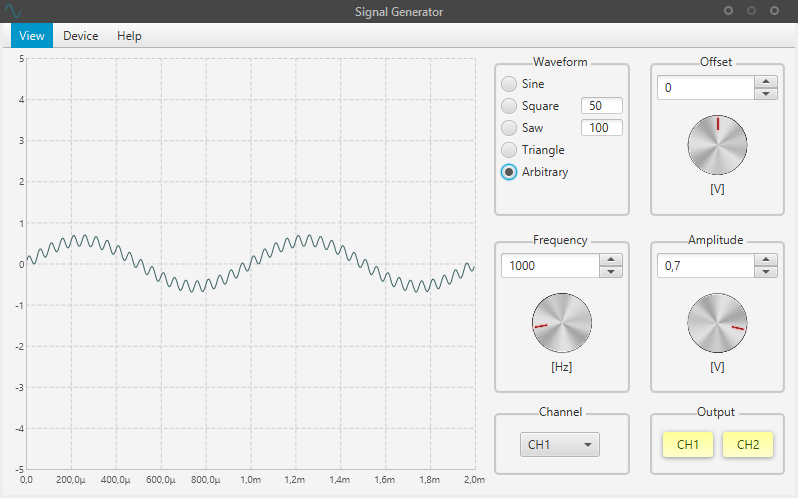

Main Window
This is the main window of the signal generator application.
With it you can choose from a set of predefined waveforms, configure frequency, amplitude, offset and output the just defined waveform with the soundcard.
Channel Groupbox
With the combobox the user selects the channel he want to see and configure in the UI. This was made as duplicating all the controls would be a waste of space.
Output Groupbox
With this buttons the user can toggle the output of the waveform.
Yellow: Inactive
Green: Active
